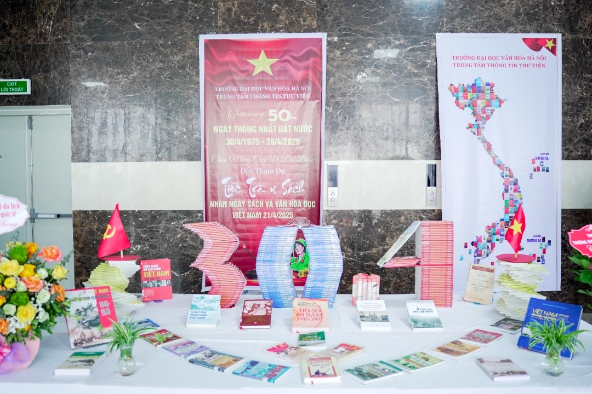
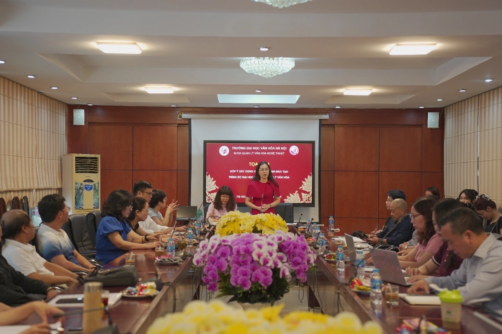
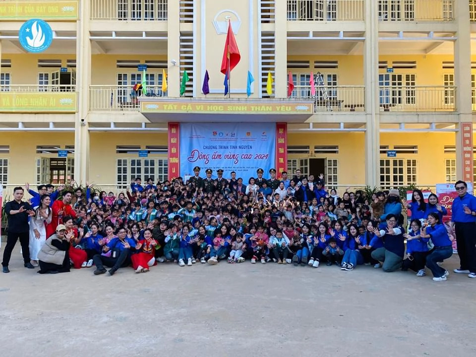
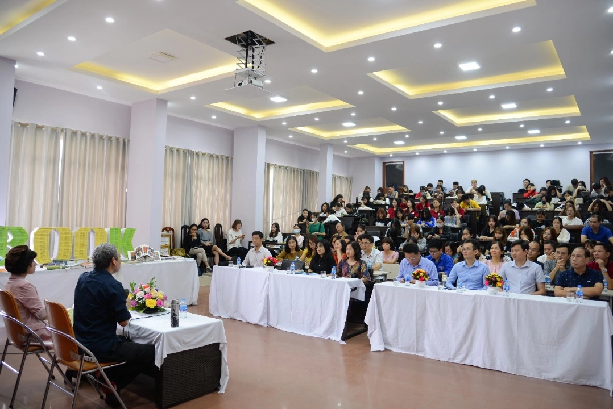
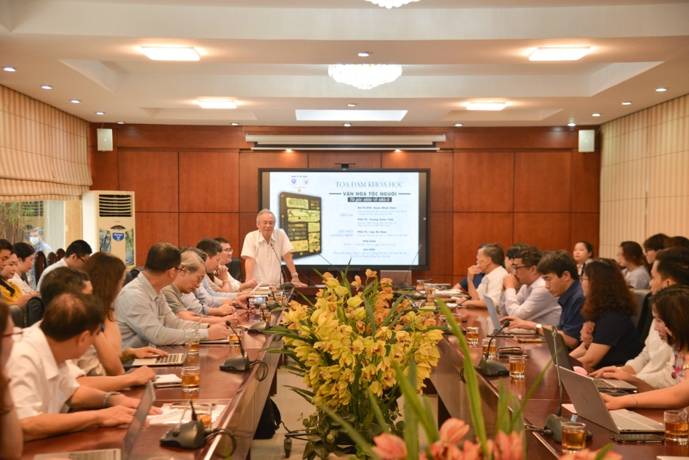

01
Giấy Phép Mở Creative Commons
Toàn bộ tài nguyên số được công bố dưới giấy phép CC BY-NC-SA 4.0, đảm bảo quyền tác giả đồng thời cho phép cộng đồng học tập tự do tra cứu, sao chép và trích dẫn phi thương mại.
Kiến tạo không gian tri thức mở, tiên phong chuyển đổi số và chuẩn hóa nguồn học liệu phục vụ nghiên cứu, giảng dạy và học tập suốt đời.
Định hướng xuyên suốt trong xây dựng chương trình đào tạo, nghiên cứu khoa học và phụng sự xã hội của Khoa.
Gìn giữ, phục hồi và số hóa các nguồn tư liệu quý giá, tài liệu cổ, di sản văn hóa dân tộc và kỷ yếu lịch sử hơn 60 năm của ngành Thông tin – Thư viện.
Ứng dụng công nghệ thông tin hiện đại, dữ liệu lớn (Big Data), trí tuệ nhân tạo (AI) và các hệ thống quản trị tri thức thông minh vào đời sống số.
Thúc đẩy văn hóa chia sẻ bình đẳng, cung cấp học liệu mở miễn phí có bản quyền minh bạch, hỗ trợ sinh viên và giảng viên tiếp cận tri thức không rào cản.
Kết nối mạng lưới cựu sinh viên, thư viện công cộng và đối tác quốc tế, lan tỏa tinh thần đọc sách và nâng cao văn hóa đọc cho cộng đồng học thuật.
Chương trình đào tạo chuẩn kiểm định, kết hợp vững chắc giữa lý luận chuyên ngành và kỹ năng thực hành công nghệ số.
Chương trình đào tạo chuyên gia về tổ chức, quản trị thông tin, vận hành thư viện thông minh (Smart Library), xử lý tài liệu đa phương tiện, chuẩn hóa siêu dữ liệu Dublin Core / MARC 21 và xây dựng dịch vụ thông tin khoa học mở. Đặc biệt, từ khóa K65, ngành đã chính thức chia tách thành hai chuyên ngành đào tạo chuyên sâu: Quản trị thư viện và Thư viện và Thiết bị trường học, đáp ứng nhu cầu thực tiễn của thị trường lao động và chuyển đổi số.
Chương trình đào tạo nhân lực quản trị tài nguyên thông tin số, khai phá và phân tích dữ liệu (Data Analytics), quản trị hệ thống thông tin quản lý (MIS/ERP), bảo mật an toàn thông tin và quản trị tri thức doanh nghiệp (Knowledge Management).
Hệ thống hóa học liệu số theo các tiêu chuẩn quốc tế về siêu dữ liệu và giấy phép bản quyền mở.
Toàn bộ tài nguyên số được công bố dưới giấy phép CC BY-NC-SA 4.0, đảm bảo quyền tác giả đồng thời cho phép cộng đồng học tập tự do tra cứu, sao chép và trích dẫn phi thương mại.
Áp dụng đầy đủ 15 trường yếu tố siêu dữ liệu quốc tế (Title, Creator, Subject, Description, Publisher, Contributor, Date, Type, Format, Identifier, Source, Language, Relation, Coverage, Rights) giúp liên thông dữ liệu chuẩn mực.
Mọi văn bản số hóa, quyết định lịch sử và tài liệu học thuật đều được trích xuất từ văn khố chính thức của Trường Đại học Văn hóa Hà Nội và các công trình kỷ yếu khoa học đã được thẩm định.
Website OER Khoa Thông tin Thư viện kết nối dữ liệu và vận hành theo định hướng từ các cơ quan chuyên môn:
Hơn 60 năm đồng hành cùng sự nghiệp giáo dục và văn hóa dân tộc (1961 – Nay)
Khoa được thành lập năm 1961 theo Quyết định của Ủy ban Kế hoạch Nhà nước và Phủ thủ tướng. Là đơn vị đầu tiên của Trường ĐH Văn hóa Hà Nội và là cơ sở đầu tiên của cả nước đào tạo cán bộ thư viện bậc đại học và trung học.
Tập trung đào tạo cán bộ thư viện bậc đại học, cung cấp nguồn nhân lực thư viện chính quy phục vụ sự nghiệp xây dựng và phát triển đất nước trong giai đoạn thống nhất và đổi mới.
Khoa Thư viện đổi tên thành Khoa Thông tin – Thư viện. Mục tiêu: Đào tạo cán bộ Thông tin – Thư viện ở bậc đại học có trình độ lý luận và nghiệp vụ về tổ chức các hoạt động trong các thư viện hoặc cơ quan thông tin tư liệu.
Khoa đổi tên thành Khoa Thư viện – Thông tin, mở hệ đào tạo cử nhân cao đẳng, liên thông cao đẳng – đại học và mở thêm chuyên ngành Thông tin học, đáp ứng nhu cầu nhân lực trong kỷ nguyên số.
Khoa đổi tên thành Khoa Thông tin, Thư viện; đổi tên Ngành Thư viện thành Ngành Khoa học Thông tin thư viện và Ngành Thông tin học thành Ngành Quản lý thông tin. Đặc biệt, từ khóa K65, Khoa đã chính thức chia tách ngành Thông tin – Thư viện thành hai chuyên ngành đào tạo chuyên sâu: Quản trị thư viện và Thư viện và Thiết bị trường học, đáp ứng nhu cầu thực tiễn của thị trường lao động và chuyển đổi số.
Những dấu ấn tiêu biểu trong đào tạo, nghiên cứu khoa học, hoạt động sinh viên và hợp tác chuyên môn.

Hưởng ứng Ngày Sách và Văn hóa đọc Việt Nam, Trung tâm Thông tin - Thư viện tổ chức chương trình nhằm tôn vinh giá trị của sách, tri thức và lan tỏa thói quen đọc trong đời sống học đường.

Tọa đàm chuyên đề quy tụ các chuyên gia, nhà quản lý, nghệ sĩ và doanh nhân trao đổi xu hướng thị trường lao động và định hướng kỹ năng số trong lĩnh vực văn hóa - thông tin cho sinh viên.

Chi đoàn và sinh viên tổ chức chương trình tình nguyện tại Trường Tiểu học Tả Phìn (Sa Pa, Lào Cai), trao tặng những phần quà ấm áp, sách vở và học liệu cho các em nhỏ vùng cao.

Trung tâm Thông tin Thư viện phối hợp tổ chức triển lãm sách tư liệu quý và buổi nói chuyện học thuật của Nhà nghiên cứu Phan Cẩm Thượng về bảo tồn và phát triển giá trị văn hóa.

Tọa đàm khoa học do PGS.TS. Trần Bình chia sẻ phương pháp khai thác, tra cứu và sử dụng các nguồn tư liệu cổ quý hiếm phục vụ hiệu quả công tác giảng dạy, học tập và nghiên cứu.
Hội thảo liên ngành phối hợp cùng NXB Khoa học Xã hội, Hội Dân tộc học và MaiHaBooks thảo luận giải pháp phát huy giá trị kiến trúc nhà ở cổ truyền các dân tộc trong xã hội đương đại.

Hoạt động định kỳ trưng bày sách chuyên ngành, giáo trình số và tài liệu nghiên cứu mới nhất, hỗ trợ tối ưu nhu cầu tra cứu và nghiên cứu học thuật của cán bộ, giảng viên và sinh viên.